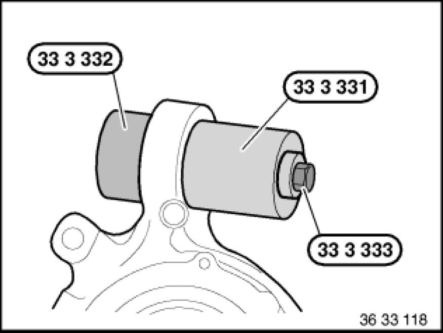

Replacing a Ball Joint In Trailing Arm for Upper Control Arm
33 32 047 - Replacing a ball joint in trailing arm for upper control arm

Special tools required:
- 33 3 331 33 3 330 Removal and Installation Tool
- 33 3 332 33 3 330 Removal and Installation Tool
- 33 3 333
- 33 3 334 33 3 330 Removal and Installation Tool

Necessary preliminary tasks:
- Remove coil spring Removing and Installing/Replacing Rear Left or Right Coil Spring
- Remove upper control arm from trailing arm Replacing One Upper Control Arm
Measure and note down protrusion (A) of old ball joint.

Pull out ball joint with special tools 33 3 331 33 3 330 Removal and Installation Tool, 33 3 332 33 3 330 Removal and Installation Tool and 33 3 333.
Keep trailing arm eye and ball joint (1) clean and free from oil and grease.
Draw in new ball joint (1) with special tools 33 3 332 33 3 330 Removal and Installation Tool, 33 3 333 and 33 3 334 33 3 330 Removal and Installation Tool to previously determined protrusion (A).
After installation:
- Perform chassis alignment check